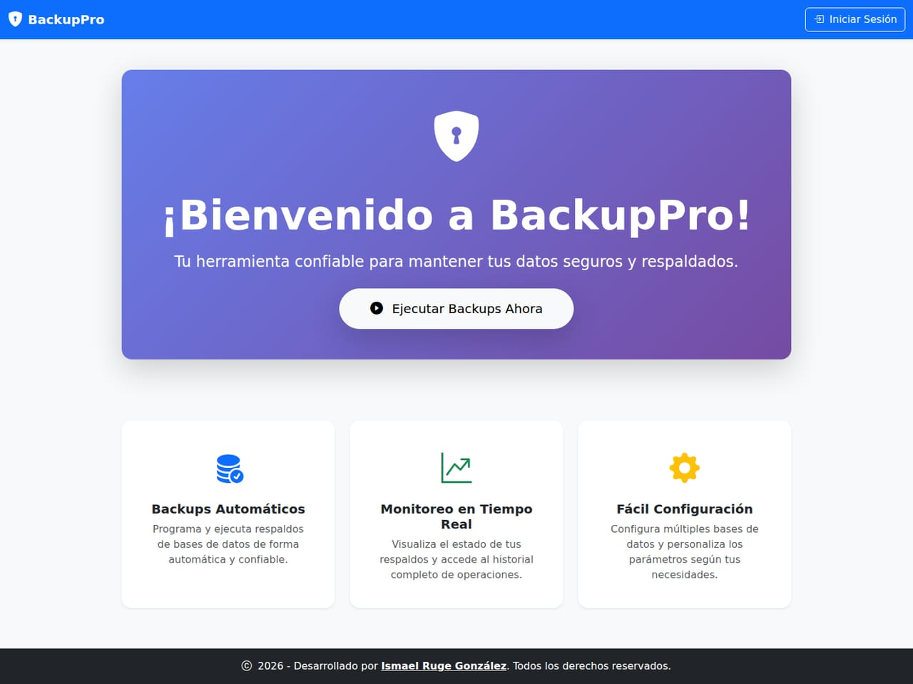
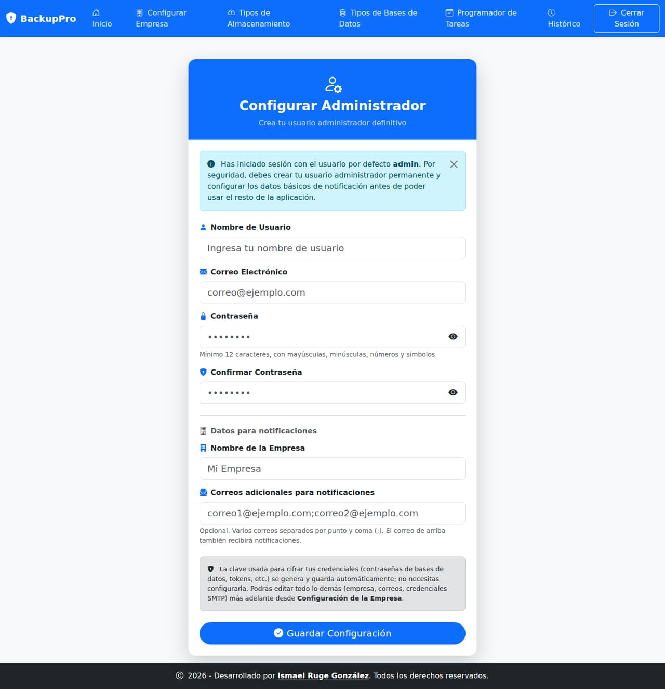
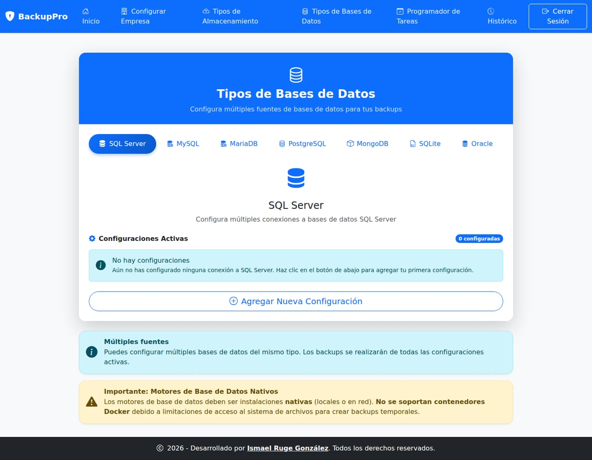
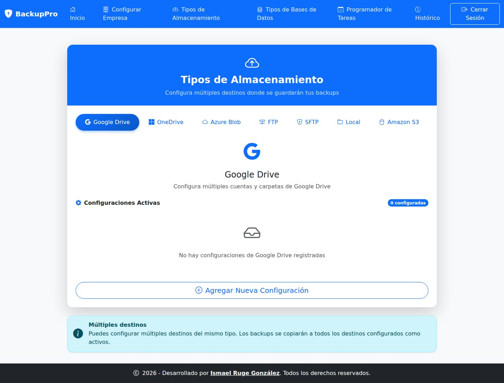
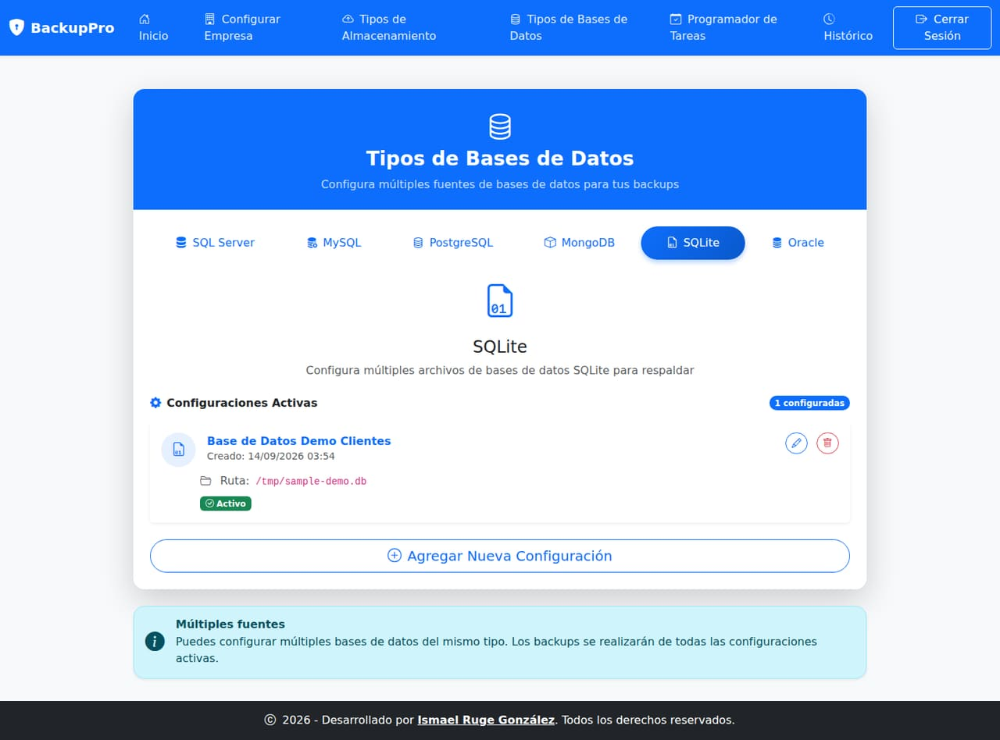
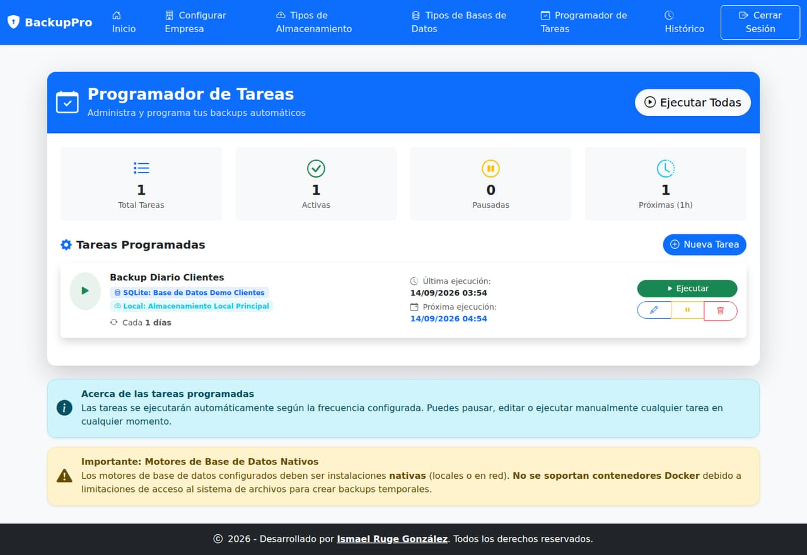
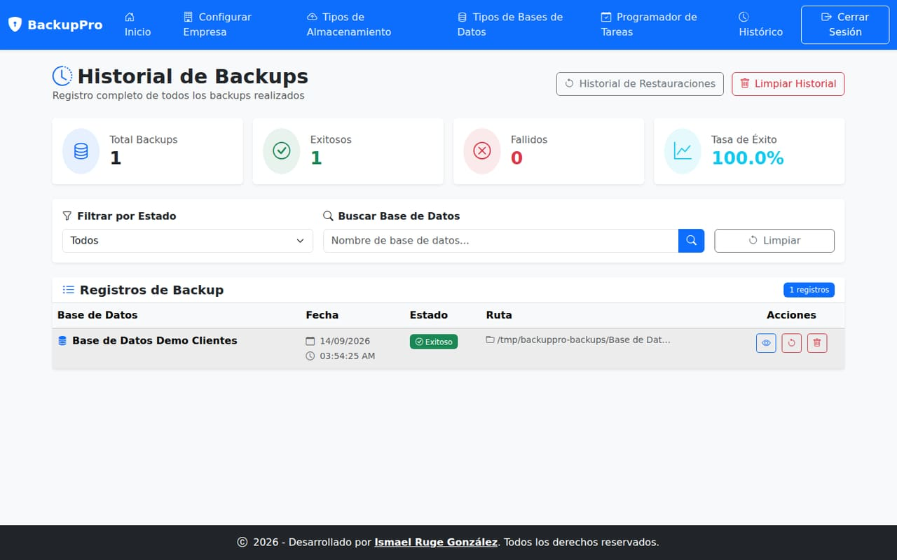

BackupPro
Programación y gestión de backups de bases de datos hacia múltiples destinos
Caso de estudio de una aplicación full stack real: 7 motores de base de datos, 7 destinos de almacenamiento, cifrado de credenciales, restauración con auditoría propia y 88 pruebas automatizadas.
Contexto y objetivo
BackupPro nació como mi proyecto de grado en Ingeniería de Sistemas ("Software de Creación de Copias de Seguridad Automáticas", publicado en el repositorio institucional), a partir de un problema muy concreto: administrar copias de seguridad de bases de datos dispersas en distintos motores y clientes, a mano, sin un panel central. No se quedó en la entrega académica — lo seguí evolucionando después con lo que fui aprendiendo en el trabajo: más motores de base de datos, más destinos de almacenamiento, cifrado real de credenciales y pruebas automatizadas.
Hoy es un proyecto personal de código completo, público y abierto (no un mockup): incluye autenticación real, cifrado de credenciales, un servicio en segundo plano que ejecuta backups automáticamente, retención automática de backups antiguos, restauración con auditoría, y una suite de pruebas que cubre la lógica de negocio crítica.
Qué hace
- 7 motores de base de datos: SQL Server, MySQL, MariaDB, PostgreSQL,
MongoDB, SQLite y Oracle — cada uno con su propio
IDatabaseBackupProvider. - 7 destinos de almacenamiento: disco local, FTP, SFTP, Azure Blob Storage, Amazon S3, Google Drive y OneDrive (estos dos últimos vía OAuth2, con exploración de carpetas del lado servidor sin exponer el token al cliente).
- Programador de tareas: ejecución manual desde la interfaz o automática
por minutos/horas/días mediante un
BackgroundServiceque revisa tareas vencidas cada minuto — no requiere que nadie entre a la app para que corran. - Retención automática ("3x6"): borra backups de más de 6 meses por cada combinación de base de datos + destino, siempre que queden al menos 3 backups recientes como respaldo mínimo.
- Restauración con confirmación explícita: operación destructiva que exige escribir el nombre exacto de la base de datos y reingresar la contraseña antes de ejecutarse; cada intento (exitoso o no) queda en un historial de auditoría que nunca se borra automáticamente.
- Asistente de primer arranque: un usuario temporal
admin(solo accesible desde el propio equipo) fuerza la creación del administrador definitivo antes de habilitar el resto de la aplicación.
Seguridad
Las contraseñas de bases de datos, credenciales FTP, connection strings y tokens OAuth se
cifran antes de guardarse (CredentialProtector):
- Derivación de clave con Argon2id (memory-hard, resistente a fuerza bruta) a partir de una clave maestra de 256 bits.
- Cifrado autenticado AES-256-GCM, con sal y nonce distintos en cada valor — el mismo texto plano nunca produce el mismo resultado dos veces.
- Ningún endpoint devuelve el secreto real al navegador: al editar una configuración, el campo de contraseña se muestra vacío; explorar carpetas de Google Drive/OneDrive se resuelve del lado servidor.
- Contraseñas de
mysqldump/mongodumpvía archivo temporal de credenciales (no como argumento de línea de comandos), para que no queden visibles en la lista de procesos del sistema. - Rate limiting en login (5 intentos por minuto por IP) además del bloqueo de cuenta de ASP.NET Identity tras intentos fallidos consecutivos.
Arquitectura técnica
Un único proyecto ASP.NET Core MVC organizado en capas lógicas por carpeta, con un patrón de
providers intercambiables para poder agregar un motor de base de datos o un
destino de almacenamiento nuevo escribiendo solo la clase correspondiente e inscribiéndola en
Program.cs, sin tocar el resto de la aplicación.
- Providers de backup:
IDatabaseBackupProvidereIStorageProvider, una implementación por motor/destino, resueltos en tiempo de ejecución porBackupProviderRegistry. - Orquestación:
BackupExecutionServicegenera el backup y lo sube, compartido tanto por el botón "Ejecutar" manual como por el servicio automático. - Modelo de datos: EF Core sobre SQLite, con migraciones aplicadas automáticamente al iniciar — no requiere un motor de base de datos externo para correr.
- Recorte de espacios en blanco centralizado: un
TrimmingModelBinderregistrado una sola vez enProgram.csevita repetir.Trim()en cada controlador (excepto en contraseñas). - CI: GitHub Actions compila y corre la suite de pruebas en cada push/PR.
Un matiz honesto (documentado en el propio README del proyecto): no es una arquitectura
N-Tier estricta — los controladores de CRUD de cada tipo de base de datos/almacenamiento
siguen accediendo directamente al DbContext. El refactor a providers se enfocó
en la lógica de ejecutar un backup, que sí estaba duplicada en cada controlador.
Pruebas y validación
Antes de tomar las capturas de este caso de estudio, cloné el repositorio en un entorno limpio, instalé el SDK de .NET 10 y verifiqué que el proyecto compila y pasa sus pruebas sin intervención manual:
dotnet build— compila sin errores (solo advertencias esperables por APIs específicas de Windows usadas condicionalmente, como los permisos NTFS de SQL Server).dotnet test— 88 pruebas, 0 fallidas, cubriendoBackupFrequencyCalculator,BackupProviderRegistry,BackupExecutionService,BackupRetentionService(los distintos escenarios de la política "3x6"),BackupRestoreService,CredentialProtectorySetupState, todo con providers simulados (sin depender de un motor de base de datos real).- Flujo end-to-end real, sin mocks: completé el asistente de primer arranque, configuré un destino de almacenamiento local y una base de datos SQLite de prueba, programé una tarea y la ejecuté manualmente — el backup se generó de verdad en disco y quedó registrado en el historial con estado "Exitoso".
Capturas de pantalla
Recorrido por la aplicación: desde la página pública hasta un backup real ejecutado de punta a punta.








Mi rol y aprendizajes
Diseñé y construí toda la aplicación: modelo de datos, los 14 providers de backup/almacenamiento, el cifrado de credenciales, el servicio de ejecución automática, la política de retención, el flujo de restauración con auditoría y la suite de pruebas.
El aprendizaje más reutilizable fue diseñar alrededor de interfaces (IDatabaseBackupProvider,
IStorageProvider) desde el principio: agregar Oracle, MariaDB, SQLite, Amazon S3
y SFTP en iteraciones posteriores fue escribir una clase nueva por cada uno, sin tocar la
lógica de ejecución, la programación de tareas ni la interfaz del historial.
¿Quieres conocer más detalles técnicos de este proyecto? Escríbeme →